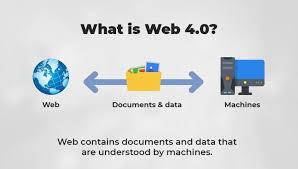

Web 4.0 is the next evolution of the internet where artificial intelligence (AI) and advanced machine learning systems interact with users in a highly intelligent and real-time manner. It aims to create a more human-like interaction between people and machines.
Web 4.0 systems continuously collect and analyze data from user behavior. Using AI, the system predicts user needs and automatically delivers personalized results, services, or actions without requiring manual search.
Web 4.0 improves automation, personalization, and efficiency. It is expected to power smart assistants, intelligent systems, and fully connected environments such as smart homes, smart cities, and autonomous systems.